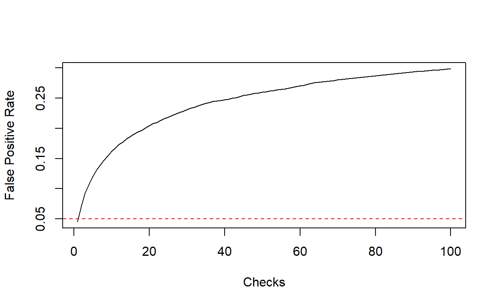
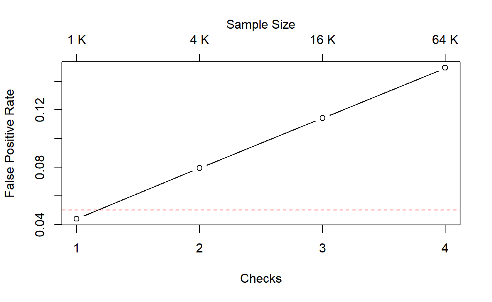
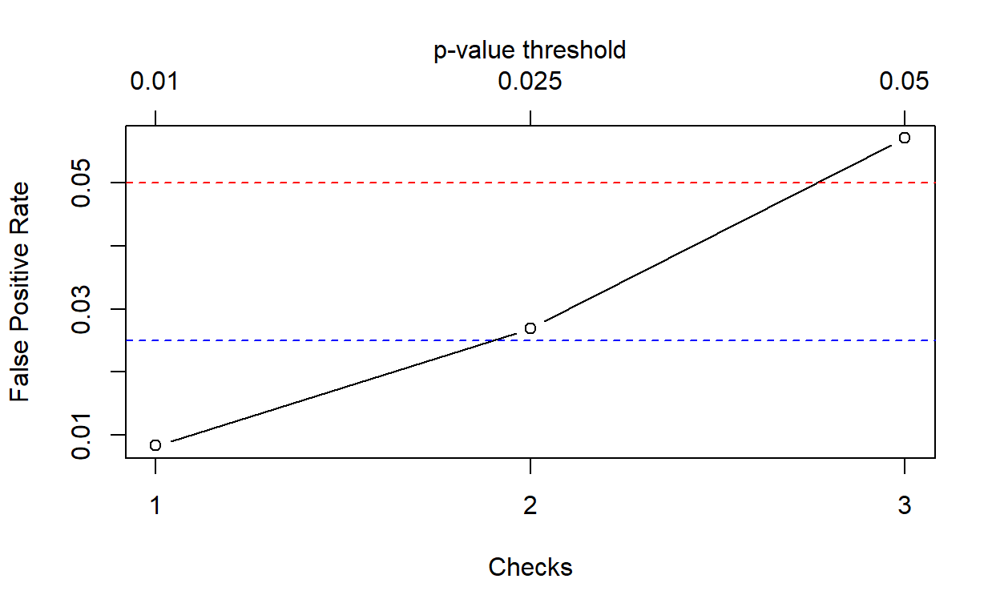

False Positive Rates under repeated checks - a simulation study using R.
“How is the experiment going?”
Also:
“Do we already see something?”
And my favorite one:
“Did we already hit significance, or do we need more data?”
If you have dealt with experiments with relatively high outcome expectations, you will likely have received (or perhaps asked yourself) similar questions from time to time.
In many data analysis contexts, including but not limited to for-profit ones, researchers are always trying to come up with positive results as fast as they can. Therefore, it is not at all surprising to see questions such as the ones above regularly arise during the course of an experiment. This is natural and not a problem per se. What I want to highlight and quantify in this post is how, if not done carefully, such “real-time” monitoring schedules can seriously invalidate data analysis - by inflating false positive and false negative rates.
Generally speaking, repeated and ad-hoc checks lead to problems of selective/simultaneous inference (a topic which I have touched in other places in this blog). Avoiding them is not the only valid solution - if you want to learn about some proper method you may give a look into Sequential Hypothesis Testing, a topic that I may explore in future posts. Here my goal is to understand the consequences of naive repeated checking, which can be easily found out through simulation.
To understand why problems can arise, recall that the classical Frequentist framework 1 operates by providing a priori guarantees (bounds) on the probabilities of 2:
The a priori nature of these guarantees means that they are stipulated before running the experiment and assuming a certain experimental schedule 3. This implies that any departure from the original schedule can in principle invalidate the claimed False Positive Rate (FPR) and False Negative Rate (FNR).
For instance, the most basic experimental schedule (actually the one implicitly assumed by virtually all sample size calculators ) is:
Common examples of departures from the original schedule include:
In what follows, I will focus on the first behavior, whose result is to inflate the FPR. Again, there are various ways to perform repeated checks while keeping the FPR under control, but that’s not the focus of this post. Instead, I want to understand how FPR is affected when the same test is repeated several times on partial data.
Let me illustrate the idea with an imaginary marketing experiment. Suppose you are optimizing an advertising campaign, say you want to test whether a new ad design performs better than the existing one in terms of click through rates. You start sending batches of two thousands ads4 to randomized users, half using the new design and half using the old one.
If the new design does actually perform better, you want to fully switch to it as soon as possible, so that after each batch send, you compare the click through rates of all ads sent so far, with the idea of switching as soon as a statistically significant improvement is observed.
Concretely, you propose to do the following:
Now, the question is: how often would the above procedure declare the new design as the winner, if it doesn’t truly perform better than the old one? (i.e. what is the FPR of the whole procedure?)
To compute the FPR, we assume that both the new and old designs have in fact the same click through rate \(p = 10 \%\). The following function generates a sequence of \(n\) consecutive \(p\)-values, computed as described above, that one could observe under these circumstances:
generate_p_values <- function(n = 28, # maximum number of iterations
size = 1e3, # ad sends per batch
p = 0.1 # true common click through rate
)
{
successes_a <- cumsum( rbinom(n = n, size = size, prob = p) ) # clicks old ad
successes_b <- cumsum( rbinom(n = n, size = size, prob = p) ) # clicks new ad
sapply(1:n, \(k) {
prop.test(
x = c(successes_a[k], successes_b[k]),
n = k * size * c(1, 1),
alternative = "greater",
)$p.value
})
}For instance:
set.seed(999)
( p_example <- generate_p_values(n = 5) )[1] 0.4704229 0.3932333 0.1669308 0.2219066 0.2592812The function below evaluates such a sequence of \(p\)-values with a fixed threshold \(\alpha\):
evaluate_p_values <- function(p, alpha = 0.05, checkpoints = seq_along(p)) {
p <- p[checkpoints]
as.logical(cumsum(p < alpha))
}For instance, with \(\alpha = 20\%\), the sequence above would lead to a (false) positive result, which would be claimed at the third check. Output looks as follows:
evaluate_p_values(p_example, alpha = 0.2)[1] FALSE FALSE TRUE TRUE TRUELet me now simulate a large number of such “experiments”. I will fix \(\alpha = 5\%\), a popular choice:
The result is a matrix whose columns are logical vectors such as the one above:
sim_data[,1] [1] FALSE FALSE FALSE FALSE FALSE FALSE FALSE FALSE FALSE FALSE
[11] FALSE FALSE FALSE FALSE FALSE FALSE FALSE FALSE FALSE FALSE
[21] FALSE FALSE FALSE FALSE FALSE FALSE FALSE FALSE FALSE FALSE
[31] FALSE FALSE FALSE FALSE FALSE FALSE FALSE FALSE FALSE FALSE
[41] FALSE FALSE FALSE FALSE FALSE FALSE FALSE FALSE FALSE FALSE
[51] FALSE FALSE FALSE FALSE FALSE FALSE FALSE FALSE FALSE FALSE
[61] FALSE FALSE FALSE FALSE FALSE FALSE FALSE FALSE FALSE FALSE
[71] FALSE FALSE FALSE FALSE FALSE FALSE FALSE FALSE FALSE FALSE
[81] FALSE FALSE FALSE FALSE FALSE FALSE FALSE FALSE FALSE FALSE
[91] FALSE FALSE FALSE FALSE FALSE FALSE FALSE FALSE FALSE FALSE(a true negative result). Hence, the averages of this matrix rows provide the false positive rates after \(n\) checks:
fpr <- rowMeans(sim_data)
plot(fpr, type = "l", xlab = "Checks", ylab = "False Positive Rate")
abline(h = 0.05, col = "red", lty = "dashed")
The curve above shows how the FPR depends on the number of checks performed, according to the procedure described in the previous section. For a single check, this coincides with FPR of an individual binomial test6. However, allowing for repeated checks, we see that the overall FPR steadily increases with number of checks. With \(n = 3\) checks, the FPR is already close to \(10 \%\), almost twice the nominal FPR of each individual test:
fpr[3][1] 0.0929With \(n \approx 40\) checks, the FPR is about \(25 \%\), the same FPR of an experiment that involves tossing a coin twice, declaring it biased if the result is two consecutive “tails”.
fpr[40][1] 0.2471Here we are assuming that data is re-checked after the arrival of every single batch, but there are of course infinite alternative possibilities. For instance, the plot below shows what happens when checks are performed after the collection of \(n = 1, \,4, \,16, \,64\) batches of data (at each checkpoint, the expected size of statistical fluctuations is reduced by a factor of \(2\)).
checkpoints <- c(1, 4, 16, 64)
set.seed(840)
fpr2 <- replicate(1e4,
generate_p_values(n = 64) |>
evaluate_p_values(checkpoints = checkpoints)
) |>
rowMeans()
plot(fpr2,
type = "b",
xlab = "Checks",
ylab = "False Positive Rate",
xaxt = "n"
)
abline(h = 0.05, col = "red", lty = "dashed")
axis(1, at = seq_along(checkpoints))
axis(3, at = seq_along(checkpoints), labels = paste(checkpoints, "K"))
mtext("Sample Size", side = 3, line = 2)
As a third possible variation, we may think of applying different \(p\)-value thresholds at different checks (a scheme that can be actually made to work in practice, see for instance the Wikipedia article on the Haybittle–Peto boundary). The following plot illustrates this, assuming three (equally spaced) checks after the collection of \(n = 1,\,2,\,3\) data batches, using the significance thresholds \(\alpha = 0.01, \,0.025, \,0.05\), respectively.
set.seed(840)
alpha <- c(0.01, 0.025, 0.05)
fpr3 <- replicate(1e5,
generate_p_values(n = 3) |>
evaluate_p_values(alpha = alpha)
) |>
rowMeans()
plot(fpr3,
type = "b",
xlab = "Checks",
ylab = "False Positive Rate",
xaxt = "n"
)
abline(h = alpha[3], col = "red", lty = "dashed")
abline(h = alpha[2], col = "blue", lty = "dashed")
axis(1, at = seq_along(fpr3))
axis(3, at = seq_along(fpr3), labels = alpha)
mtext("p-value threshold", side = 3, line = 2)
This post illustrated quantitatively how the performance of repeated checks during the process of data collection can affect the overall False Positive Rate of an experimental analysis. The code provided above can be easily adapted to simulate other types of experiments and schemes for interim checks.
A question that may possibly arise is: should I really care? You could argue that what I’ve shown here represents a simple trade-off between FPR on one side, FNR and efficiency (speed) in detection of a signal on the other.
My answer is a resounding yes, irrespective of whether you are running experiments for purely scientific or utilitaristic purposes. If you are unable to characterize (at least approximately) the FPR and FNR of your analysis, the whole point of running a formal test looks very dubious to me. You may as well simply collect some data and draw an educated guess.
Other story is if you are able to tell in advance how interim checks affect FPR/FNR, and use this knowledge to optimize your analysis strategy. This note provides some clues on how to do so.
I move within this framework because it is the only one I’m reasonably comfortable with, and for which I have a decent understanding of the decision dynamics that follow from it. That said, I suspect that also Bayesian hypothesis testing can be affected by the kind of issues discussed here, although perhaps in a less transparent way, due to working with formal a posteriori probabilities.↩︎
The statistical jargon used to indicate these two types of errors, and the corresponding a priori guarantees on their probabilities, sounds very mysterious to me (Type I/II errors, size and power…). I like to think in terms of “False Positive” and “False Negative” rates, which is the same thing.↩︎
This is generally true, also in the aforementioned sequential settings. In that case, the difference is that the schedule takes into account that continuous and/or interim checks will be performed.↩︎
The actual numbers in this example may be totally unrealistic, but that’s beside the point.↩︎
Technically, this would be a two-sample, one-sided binomial test.↩︎
The fact that this is not exactly equal to \(\alpha\), but in fact slightly smaller, is due to the discreteness of the underlying binomial distributions. The \(p\)-value of the binomial test is defined in such a way to satisfy \(\text{Pr}(p < \alpha)\leq \alpha\).↩︎